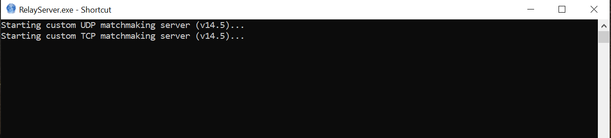
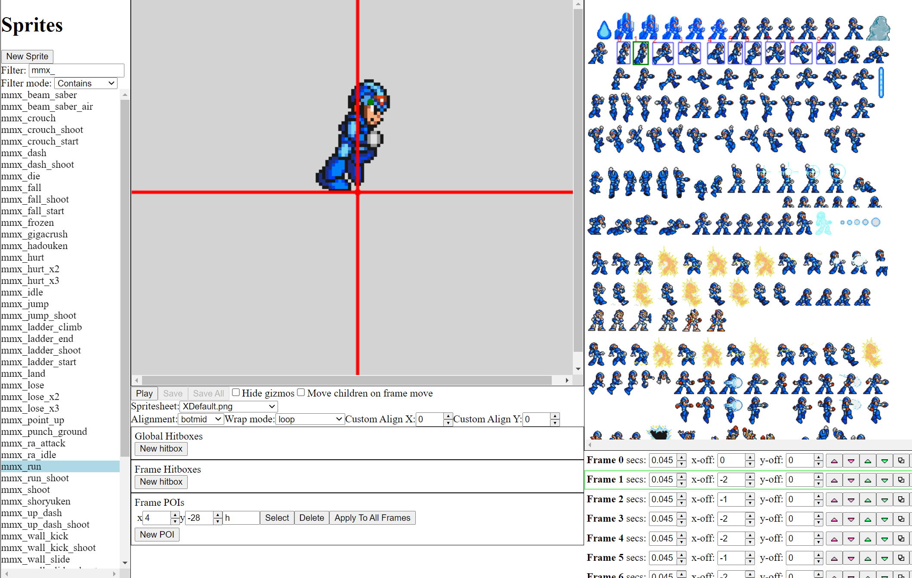

Here are some tools and utilities you can download to help with tasks like modding, etc.
Download: Windows Download (v19.6, 64 bit)
Description: Command line program that allows you to host LAN matches and your own servers.
Help guide: Relay Server Help Guide
Screenshots:

Download (64 bit): Windows Download (v3.2.0)
Download (32 bit): Windows Download (v3.2.0)
Description: You can use this utility to edit MMX Online: Deathmatch sprites and maps. Note, both the sprite and map editor are in the same download as they are the same exe.
Help guide: Sprite Editor Help Guide | Map Editor Help Guide
Screenshots:

Download: N/A (comes bundled with the game executable)
Description: This tool is available in-game if enabled in settings and can be used for experimentation or troubeshooting. See Developer Console page for more deatils.